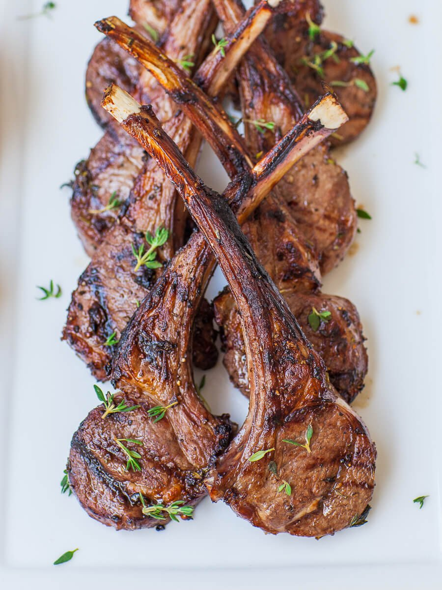

Herbed Lamb Chops

Description
This lamb chop recipe is a family favorite. We've been making it for years for special family occasions.
Ingredients
- 2 tablespoons chopped fresh basil1 tablespoon chopped fresh rosemary1 tablespoon chopped fresh oregano1 tablespoon garlic powder2 teaspoons ground black pepper12 raw chop with refuse, 160 g; yields excluding refuses lamb chops½ cup olive oil1 medium onion, choppedleaves from 1 celery stalk, chopped2 tablespoons salt1 cup water, or as needed2 tablespoons chopped fresh parsley
Steps
- Combine basil, rosemary, oregano, garlic powder, and pepper in a bowl. Season one side of the lamb chops with 1/2 of the seasoning mixture.
- Heat olive oil in a large, deep frying pan over medium-high heat.
- Place each chop, seasoned-sides down, into the heated pan. Season the second side of the lamb chops with the remaining spice mix. Brown both sides quickly, 3 to 5 minutes. Reduce the temperature to medium and add onions. Cook and stir until onions sweat and start to turn translucent, about 5 minutes.
- Add celery leaves and salt, and enough water to just cover the chops. Let simmer and reduce over medium heat until water has evaporated, 20 to 30 minutes. An instant-read thermometer inserted into the center of a chop should read at least 140 degrees F (60 degrees C).
- Serve family-style on a platter using the remaining reduction as a sauce. Sprinkle parsley on top.